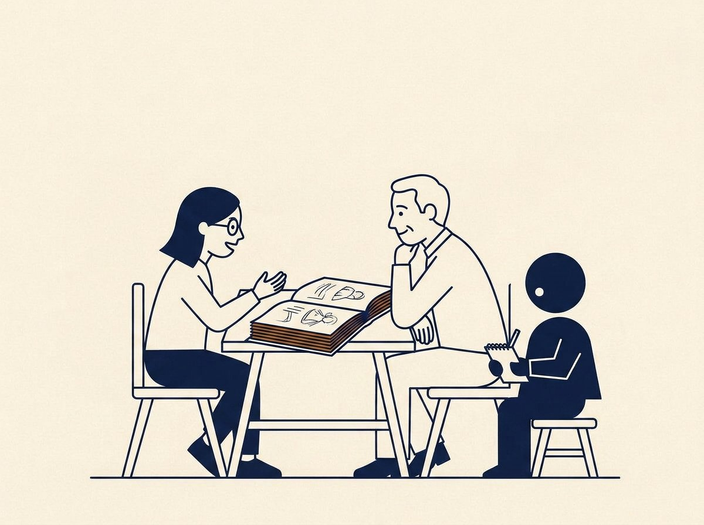
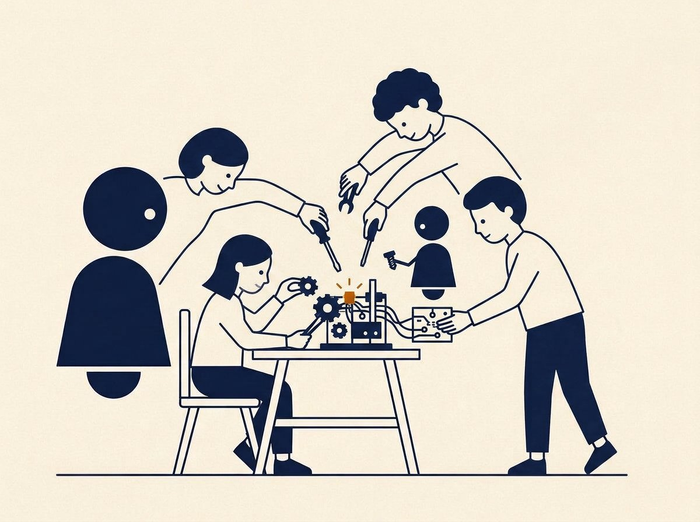
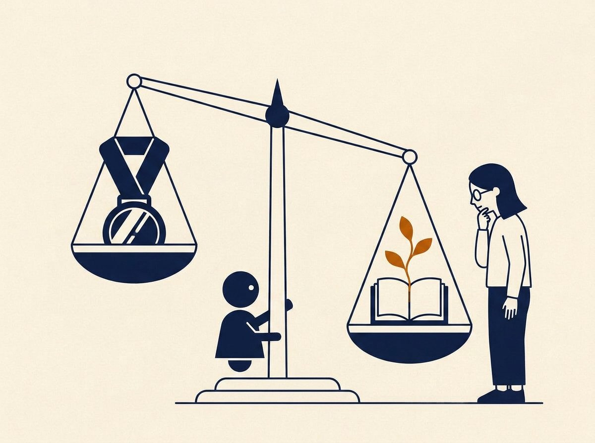
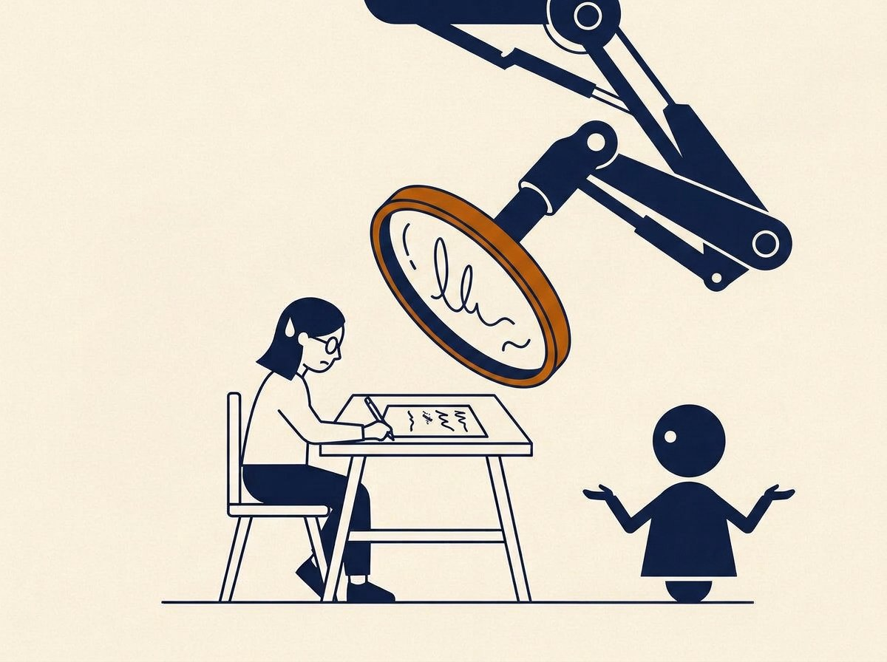
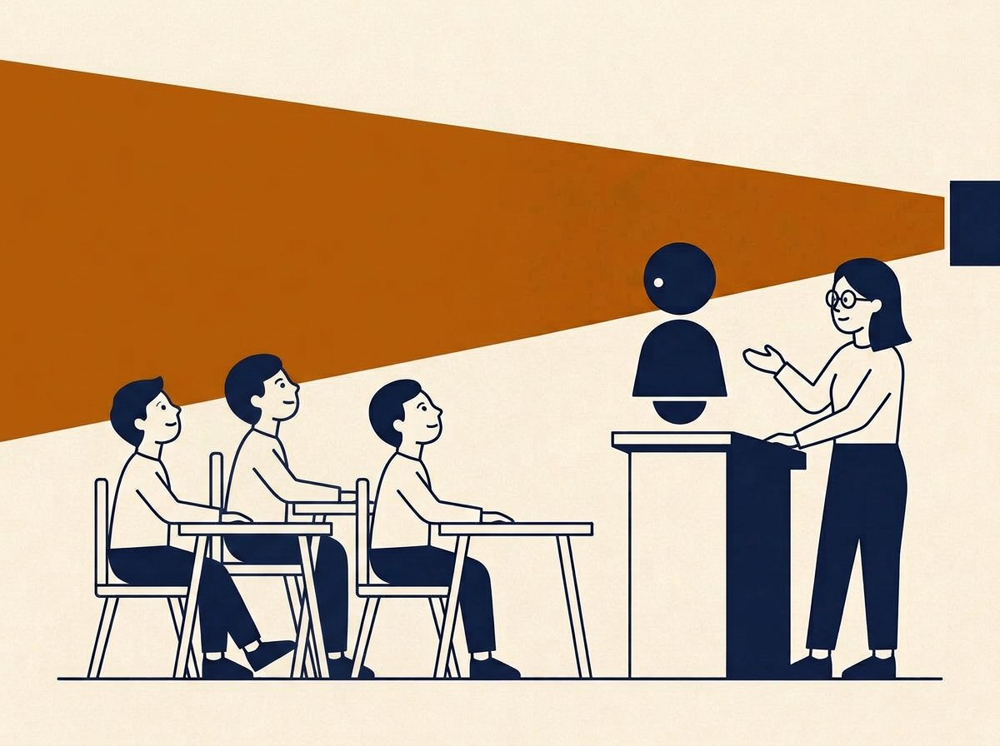
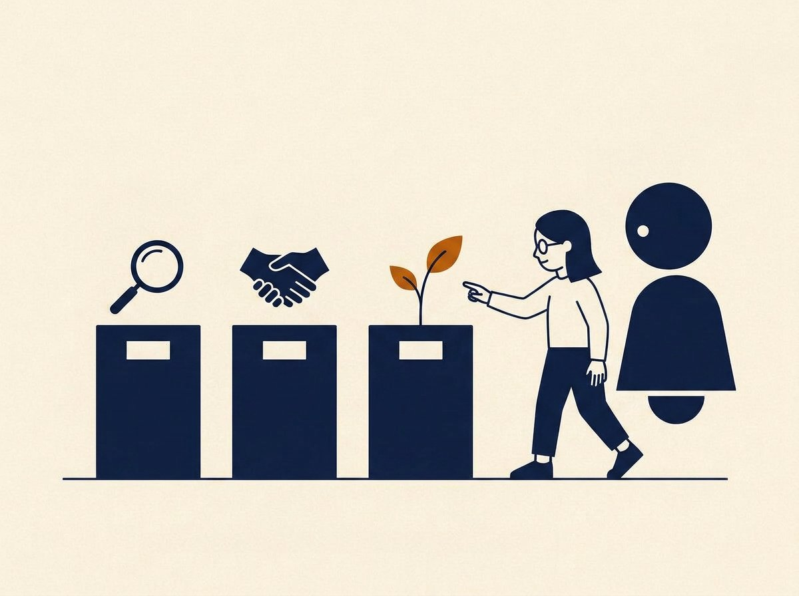
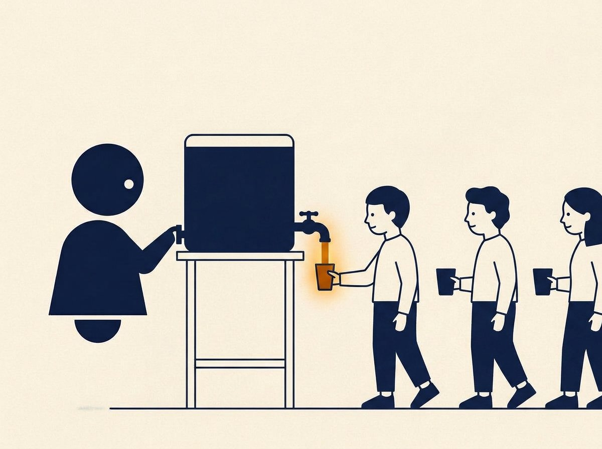

Practice
From principles to practice
Part two of my read of MIT's August 2026 report: its action list, read from a campus that does not have MIT's budget.
My first page on the report stayed at the level of positions: the stances I hold, and the eight principles the committee set out. That was an editorial decision, and it left the longer half of the report on the table. This page covers that half: what the committee actually recommends doing, in its ten recommendation groups running from course assessment to campus infrastructure.
I read the list with one bias declared. MIT's solutions assume MIT's resources: pilot funds, fellow programs, standing committees, and a model-agnostic platform with per-user monthly credits. Most campuses have none of these, and neither does a single instructor planning next semester. So for each group I ask a transfer question: what survives when the budget and the org chart are removed? Usually something does, and it is usually the part that was about pedagogy all along. Eight groups matter most to my context; this page takes them in turn.
The action list, read twice

Rebuild assessment §3.1.1-3.1.2
Start by revisiting what each course is actually for, now that AI can complete most written assignments. The committee warns against simply AI-proofing everything: leaning on timed in-class exams narrows what a credential signals and cuts against the deep, unhurried work students should learn to value. Its alternatives are oral exams, semester portfolios, and out-of-class assignments paired with in-class conversations about them.
TransferNone of these needs a grant. Rethinking assessment is where I believe the change has to begin, and any individual instructor can begin it. A portfolio defended in conversation is also the cleanest answer to the question everyone asks first: how do I know the student did the work?

Projects and social learning §3.1.3-3.1.4
Match the new assessments with more experiential, project-based learning. Because AI lowers the cost of ambitious work, a capstone class can now expect near production-quality software in one term, and architecture students can visualize and test ideas that once took weeks. And because AI is quietly dissolving study groups and office hours, the committee asks every subject to build structured, graded in-person interaction back in, with its purpose explained to students from day one.
TransferThe day-one explanation is the part I keep underlining. Students follow rules whose purpose they understand, and "we work in groups because learning here is social" is a purpose I can defend: collaboration is the third link of my teaching chain, and here the report gives it the same weight.

Grades, on trial §3.1.6
Grade maximization is itself an incentive to lean on AI, so the committee refuses grade rationing and questions the currency instead. It points to competency- and mastery-based schemes, to employers who already trust their own exercises over transcripts, and admits a thought experiment: if MIT had no grades, much of the incentive to cheat with AI would disappear.
TransferNo individual teacher gets to abolish grades, so what transfers is smaller but real: grade the process as well as the answer, give feedback a transcript cannot compress, and let portfolios carry real weight wherever a course produces visible work.

The detector temptation §3.1.9
The committee recommends against relying on AI detectors and lockdown browsers. Detection invites an arms race with paraphrasing tools that nobody wins, and its false positives land hardest on non-native English writers and neurodivergent students. MIT's disciplinary committee does not accept detector output alone as evidence. The suggested alternatives are version histories, staged deadlines, and work developed in class.
TransferThis row matters even more in Taiwan, where most students write in English as an additional language. A tool whose known failure mode is misreading their prose as machine-made is not a neutral instrument. Process evidence beats pattern-matching, and it costs less than a surveillance license.

Instructors disclose too §3.2.3
Students notice immediately when instructors restrict student AI while quietly generating slides, feedback, and grading comments with it, and they read it as a double standard. The committee asks instructors to disclose their own AI use, and suggests a better channel for machine feedback: hand it to students as a revision tool rather than hiding it as the grader.
TransferHow a university writes its disclosure policy is out of any one teacher's hands. What is worth keeping here is the symmetry inside the recommendation: whatever students are asked to declare, the people teaching them should be ready to show first.
AI in theses, on the record §3.2.6
Every thesis should carry a statement of how AI was used in producing it. AI never appears as co-author, and the human author remains responsible for verifying everything, including citations, which language models are known to fabricate.
TransferThis is the recommendation closest to my daily work as a researcher. A short usage statement is a small price for a large clarity, and the fabricated-citation warning is not theoretical: any reference an AI suggests stays unverified until I have opened it.

AI literacy in three registers §3.2.4
The report splits AI literacy into effective use (verify outputs, know a model's failure modes, recognize when not to reach for AI), responsible use (understand augmentation versus automation and disclose honestly), and ethical use (training data, bias, homogenized voice, environmental cost, authorship). It wants these woven through orientation and the whole curriculum, and cites a campus survey where about two thirds of students saw AI as central to their careers while only about a quarter felt their education was preparing them.
TransferThis is where the report and my research agenda overlap most cleanly. The three registers give structure to the literacy ground layer I argue for on my thinking page, and the quarter who feel prepared is the measurable version of why that layer exists. My thinking page works this out in full.

Fair access, priced §3.3.7
Top commercial AI plans run around $200 per month, so students who can pay literally learn with stronger tools than students who cannot. MIT's answer is Parley, a model-agnostic campus platform giving every member about $30 of monthly credits and API access for coding tools. The committee concedes the amount may fall short and asks for continuing review.
TransferMost campuses cannot fund a Parley. The lens still travels: access is a design variable. An assignment that assumes a $200 subscription measures family income; one that assumes fluent AI habits measures who had guidance.
What I have left off: the report's institutional machinery (standing committees, AI Leads, fellows, pilot funds, metrics programs), its space planning, privacy logging, and environmental audit. Those are things only an institute can do, and I have no institute to offer. What one person can do is the eight rows above.
Reference
MIT Ad Hoc Committee on AI Use in Teaching, Learning, and Research Training. Report. Massachusetts Institute of Technology, August 13, 2026. Recommendations section §3. Read the full report